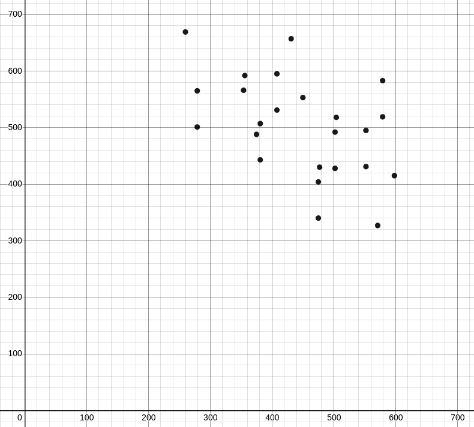

Today, I’d like to share yet another really cool (but also really trippy) programming problem. This problem is Timeismoney from the 2011 Balkan Olympiad in Informatics.
Here’s the gist of the problem:
You’re given a graph where each edge has 2 costs $t_i$ and $c_i$. Find a spanning tree such that $\sum t_i \cdot \sum c_i$ is minimised.
Firstly, if $t_i = c_i$ for each $i$, this is just a normal minimum spanning tree problem that we can solve with Kruskal’s algorithm. However, this is far from the full solution.
When I say this problem is trippy, I mean it.
Observation 1
“What if we turn this graph theory problem into a geometry problem?” - Not me
Firstly, for the sake of simplicity, let $\sum t_i$ be $T$ and $\sum c_i$ be $C$.
For each spanning tree, we can try plotting $T$ against $C$ in the Cartesian plane.
Plot of the sample input
Why would we want to do this?
Well, if we want to have $\sum t_i \cdot \sum c_i = K$, then the points $(t_i, c_i)$ that satisfy that equation form a hyperbola. This means we effectively want to find the hyperbola closest to the origin.
Hyperbolas
Here, the blue parabola goes through the point $(279, 501)$, which is the optimal point.
Observation 2
“Hyperbolas are convex. What can we say about the points that can possibly be the optimal point?” - Not me again
Since hyperbolas are convex and we want the hyperbola to be as close to the origin as possible, we only need to consider points on the lower convex hull! More specifically, we only need to consider the points on the convex hull between the point with the smallest $T$ and the point with the smallest $C$.
The lower convex hull
Since all $t_i$ and $c_i$ are small and there are $O(N^{2/3})$ points on the convex hull if all coordinates are less than $N$, this means that there are only $O((N \cdot T_{max})^{2/3}) \approx 1500$ such points we need to check. Unfortunately, though, we do not know what the points are, so we can’t just iterate through them.
Observation 3
“Hyperbolas are inconvenient. What if we consider straight lines instead?” - Still not me
Instead of considering $\sum t_i \cdot \sum c_i$, consider $\sum t_i + \sum c_i$. This is much more convenient for 2 reasons:
- Geometrically, this turns into a straight line/half-plane.
- Instead of having 2 weights for each edge, we can now simply assign a single weight to each edge.
Unfortunately, this does not get us 100 points.
Notice how we’re treating $T$ and $C$ as equally important here when they’re not. What happens when we weight $T$ and $C$ differently?
Observe that the point with smallest $T$ simply weights $T$ as 1 and $C$ as 0, and the point with smallest $C$ weights $T$ as 0 and $C$ as 1. Every other point on the convex hull between them is something in-between. Let the weight for $T$ be $a$ and the weight for $C$ be $b$.
If we have $a$ and $b$, we can simply weight each edge as $a \cdot t_i + b \cdot c_i$ and then use any MST algorithm.
What do the points where $a \cdot T + b \cdot C \leq K$ for some $a$, $b$, and $K$ look like? If we rearrange the elements, we get the inequality $T \leq -\frac{b}{a} \cdot C + \frac{K}{a}$.
Notice how this is a half-plane. Finding the minimum $K$ involves shifting the line defining the half-plane to the left:
Shifting the line defining the half-plane
Observation 4
“Rotating calipers?”
Imagine you take a ruler and touch it against the convex hull. If you rotate the ruler around the shape while making sure it keeps in contact, notice that the ruler touches each vertex of it at some point.
This means we can just try out a bunch of different $(a, b)$ combinations and take the minimum of all of them!
This turns out to be enough to get 100 points on the official test data. However, this isn’t precise enough to deal with all possible test data, so we don’t settle for this.
Observation 5
“Imagine we have 2 points on a convex hull. How do we find the others?”
If we have 2 points already, we can recursively find the points in-between them (assuming the 2 points aren’t adjacent).
Notice how if we draw the line between those 2 points and move the line to the left, it will touch every point between the 2 points, since the convex hull is… convex.
Recall from observation 3 that finding the minimum $K$, given an initial $K$, $a$, and $b$ involves shifting the line to the left. Since the gradient of the line is simply $-\frac{b}{a}$ and we know the gradient since we know the 2 points, we can work out $a$ and $b$ and thus find the point where $a \cdot T + b \cdot C$ is minimised!
Shifting the line
We can then recursively find all points between the first known point and this new point, as well as all points between this new point and the second known point. This lets us efficiently try out all points on the lower convex hull.
Code
1 |
|
Conclusion
I really like this problem for 2 reasons.
Firstly, it turns a graph-theory problem into a geometry problem. Problems where I initially think use topic X but actually use topic Y are often very creative and interesting, and this is no exception.
Secondly, it uses convexity not once, not twice, but thrice across 5 different observations required to get the full solution. The observations are also all (somewhat) linked together, so even though this problem is insanely difficult, getting to the full solution is still reasonable.
I think BkOI 2011’s problems were all great, but this one far outshines the others in both elegance and difficulty. It’s no wonder nobody solved this in-contest.